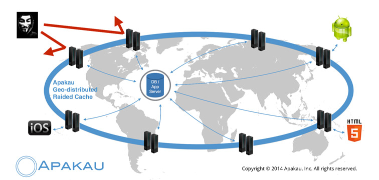
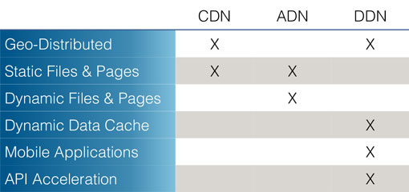
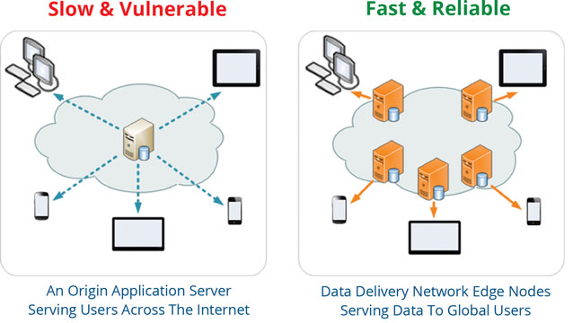

Xylem data delivery network, or simply DDN, is an intelligent network of geo-distributed edge nodes (servers) that are physically located close to users. By placing these edge nodes at the farthest branches of the internet rather than at major data centers, the distance traveled by data is reduced to a minimum achieving the lowest latency. Also, Xylem DDN shields application servers from DDoS attacks, and normalizes traffic spikes for maximum uptime and performance.
Without a geo-distributed data delivery network, users, on mobile devices and desktop, experience delays (latency) because data is physically traveling back and forth a long distance - possibly across continents - to the origin application server. Data travels at the speed of light, but the Internet is anything but a straight line. The closer the distance and the least the router hops, the faster data loads on a user's screen.
If you ask a content delivery network (CDN) or an application delivery network (ADN), they will tell you they can make everything on your website or mobile app faster! But in reality, a CDN handles static assets only, i.e. images, videos, pages and files. CDNs do not handle data stored at or processed by an application server or database. An ADN may handle dynamic pages, but not data, and it is not geo-distributed. On native mobile applications for example, every single click is an API call - a data call, and a CDN or ADN cannot make your mobile app faster. A DDN on the other hand is built to do that.
The intelligent Xylem data delivery network caches relevant data at relevant edge nodes based on user behavior. The cache is dynamic and works in real-time to serve fresh data to users. Unlimited automatic and instantaneous cache purges keep the data cache fresh without the need for you to intervene and worry about dirty data.
With its geo-distributed architecture, Xylem data delivery network protects from outages by shielding the origin servers from DDoS attacks. The addresses of the origin servers remain hidden and shielded from attackers. And with concurrent user queue management, Xylem DDN gives you the ability to limit the number of connections to the origin application servers even during traffic spikes to maintain high performance.
Gain visibility and control with the easy-to-use Xylem dashboard. It shows the latency, cache-hit ratio and number of connections of Xylem edge nodes on an interactive map. Manage traffic and maximum number of connections by region or any other geography with a click of a button.
Xylem data delivery network includes end-to-end encryption as standard to ensure maximum security and protection of your data. That means data gets encrypted at the origin application server and gets decrypted in the user device. THe encryption key is set and held by you only. Always encrypted, always protected.
Incorporating Xylem API suite - HTML5, iOS or Android - into your web or mobile applications can be implemented in a single day. Whether cloud or legacy data center, no change is required to the existing application or data center infrastructure. Xylem also works hand in hand with content delivery network (CDN) services and/or application delivery controller (ADC) services to reduce latency and maximize uptime.